ご挨拶
横浜女学院書道部"輝筆撫子"です！ 輝筆とは輝く筆と書きます。
私たちは主に月・火・金・土の週4日活動していて、月・火は机に向かって書く"競書""臨書"で、金・土は大きな紙と筆を使って表現する"書道パフォーマンス"を練習しています。
この展示では部員が文化祭までに取り組んできた臨書の作品がご覧いただけます。また、今年の創作テーマは「春夏秋冬」になっていてテーマに沿った書道に挑戦しました。 それぞれに個性があり、様々な書の魅力に触れることが出来ます。ぜひお楽しみください！
高2の作品
石川李桜
臨書『顔氏家廟碑』

顔真卿が父の惟貞の廟に建てた碑です。
肉太の線や、向かい合う縦画を互いに外側へふくらませた文字構え、さらに正方形に整えた概形によって、真正面を向いた、どっしりとしてゆるぎのない字姿となっています。 蚕の頭のように丸くなった起筆や燕の尾のような形をした右払いなども特徴的です。
創作

テーマは冬です。back numberの西藤公園という曲の歌詞を使って、書道アートに挑戦してみました。少し離れると、絵のように見える作品となっています。 下の赤い文字はマフラーを表していて、｢私は冬が好き｣と書いてあります。上の黒い文字は、ポニーテールの女の子の横顔を表していて、｢言葉が白く目に見えるから｣と書いてあります。
石田莉花
臨書『関戸本古今集』


- 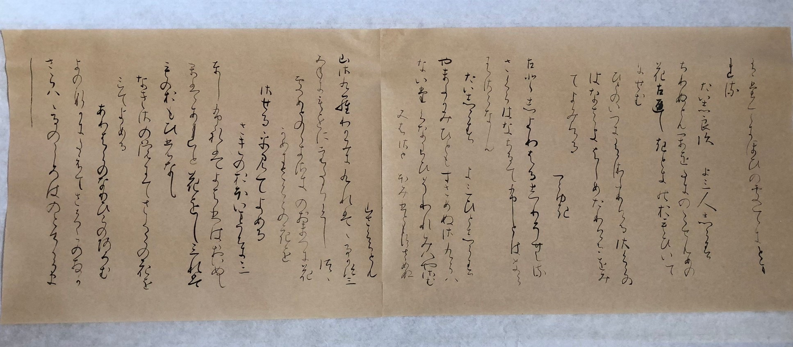


名古屋の豪商・素封家関戸家に伝来する『古今和歌集』の零本。 関戸家所蔵の冊子本と諸家蔵の断簡数十点ほどが確認されている。 書写は11世紀後半で、伝称筆者は藤原行成。平安古筆の代表的遺品の一つ。
創作
- 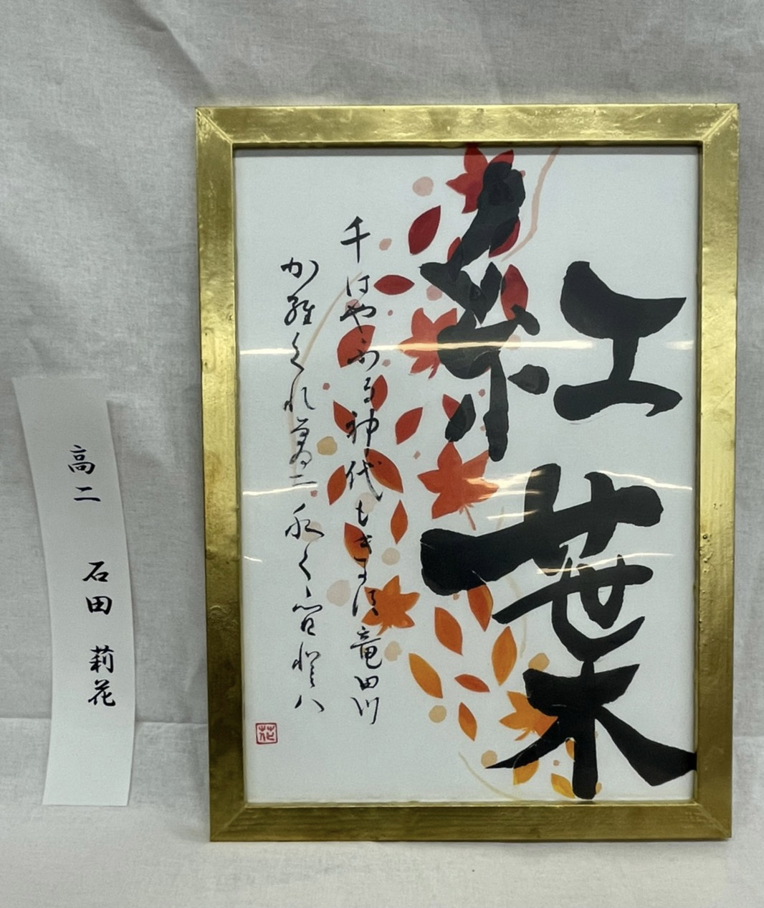
秋の風物詩である｢紅葉｣をテーマにグラデーションの葉を貼り付け、葉が散っていく様子を表しました。 また、在原業平の『ちはやふる神代もきかず竜田川からくれなゐに水くくるとは』という和歌を添え、昔の竜田川でも紅葉が綺麗だったということを表現しました。
荻原璃世
臨書『始平公造像記』

龍門石窟寺を創建した比丘慧成が、その由来を述べ、始平公を供養するために造営しました。肉太で重厚な文字は鋭く角張りつつも悠然としていて、龍門様式の最たるものとされます。
創作『行灯』


- 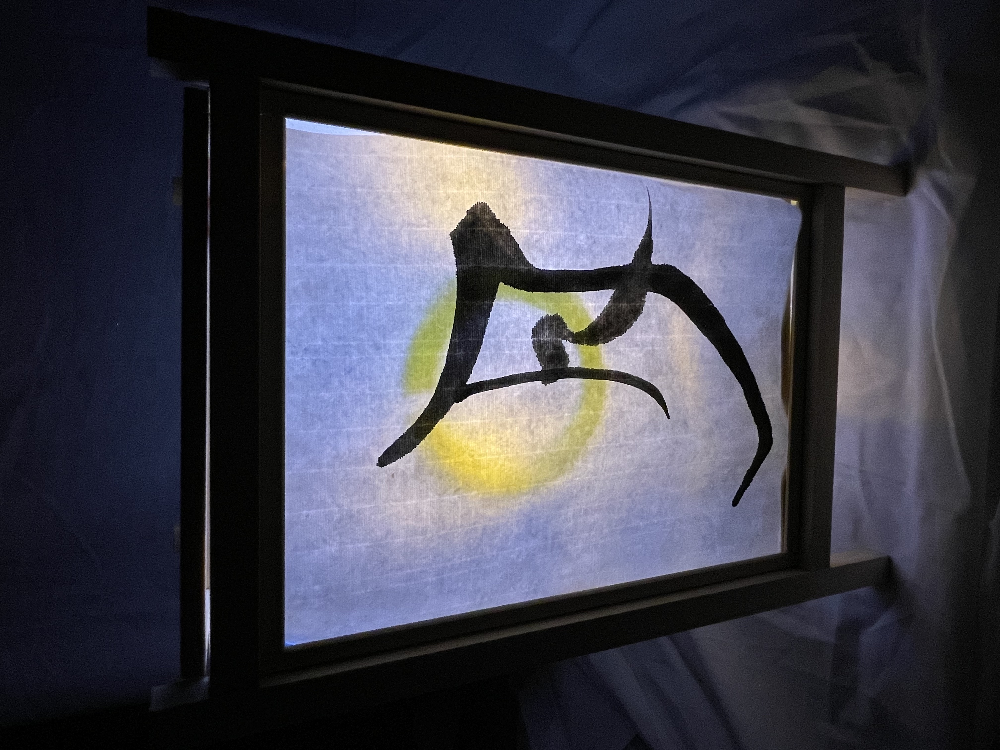

｢和｣の美しさで、見てくださった方に心を癒していただきたいと思い、行灯の落ち着きのある灯りと書を融合しました。春夏秋冬をそれぞれの面で表現し、俳句や漢詩に灯りを生かしたイラストを添えました。
中谷朱里
臨書『重之集』


- 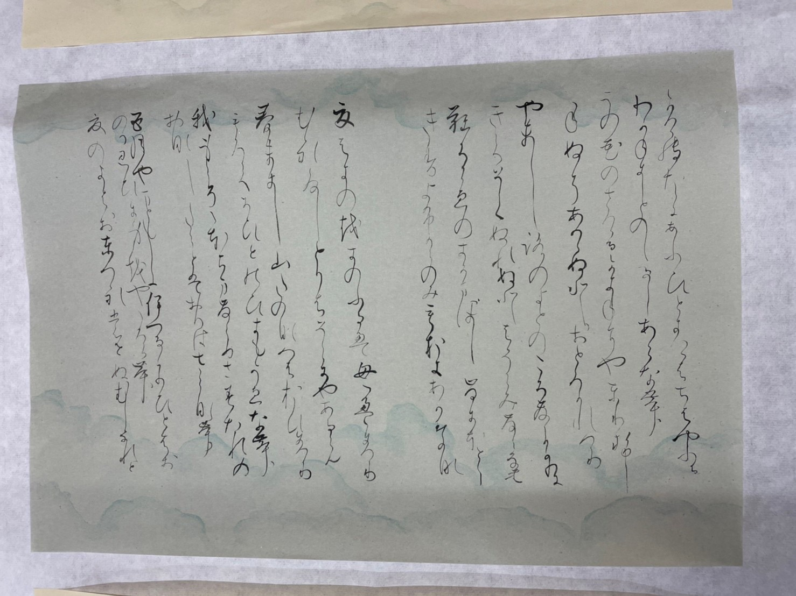

- 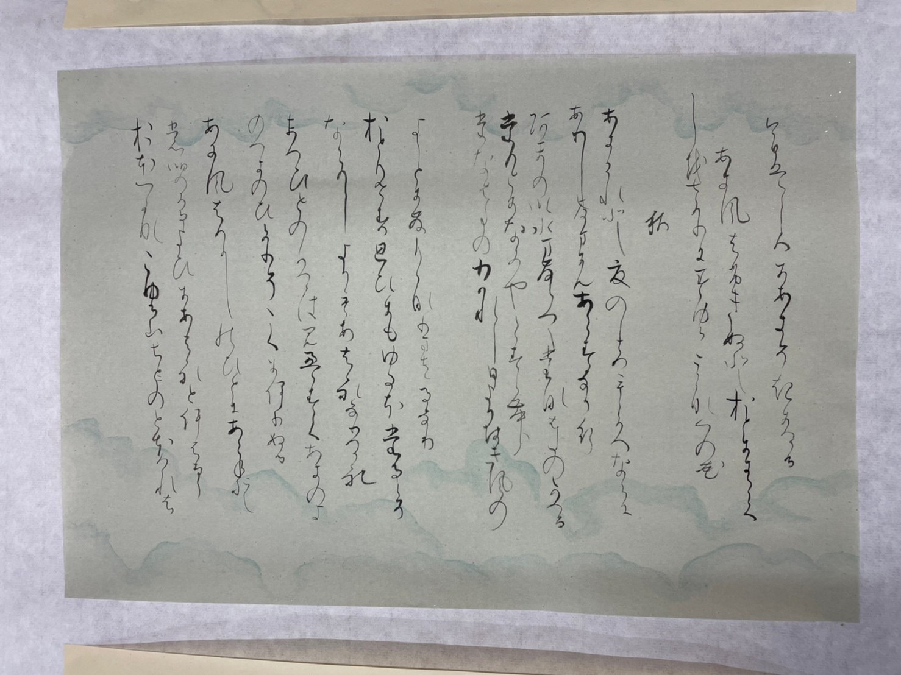

- 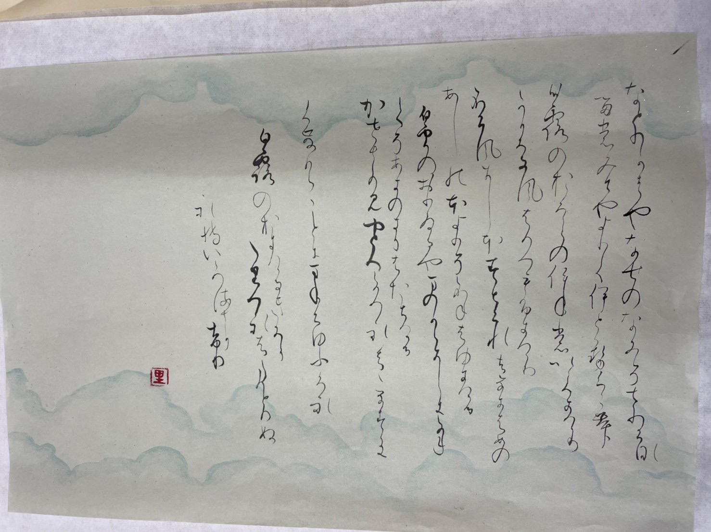
三十六歌仙の一人源重之家集で、春・夏・秋・冬各二十首、恋・恨各十首が書かれている。 綴葉装の冊子本で、雲母を一面に撒いた淡い藍の打曇りのある料紙に、流麗な筆致で前半は歌を二行書き後半は散らし書きにしている。 後半部の百首歌だけが独立した形で書写されていて百首歌の初期のものとして貴重な存在となっている。
創作

冬から春に移り変わる様子を絵にしました。ただ桜の絵を描くのではなく、桜という文字を書き、桜の10画目を長めにして、山にまだ雪が残っている所に向かって春風を表しました。
仲地令薫
臨書『風信帖』
- 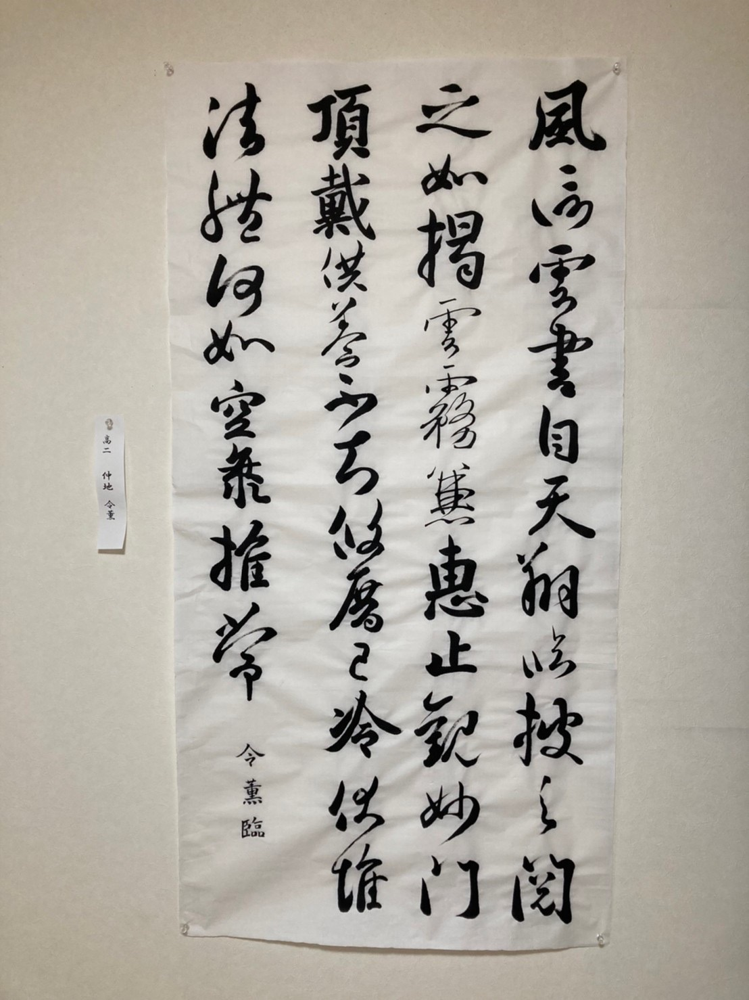
風信帖は、空海が最澄にあてた手紙3通を1巻の巻物として保存されたものです。中国の文化を取り入れ、堂々とした行書で書かれているのが特徴です。
創作

この作品は春夏秋冬の中から梅雨の時期に着目して創作しました。歌の意味は『紫陽花が夕べの空の色を羽織っているように藍色に咲いている』という意味で、学校帰りに咲いている紫陽花を表したものです。
藤田透子
臨書『蘭亭序』

王義之が永和九年に詩会（曲水の宴）を催し、その時の詩集の序文を揮毫されたもの。
全324字。力強さを感じる表情豊かな行書の美しさに惹かれ、この作品を選びました。
創作『四季と書』
- 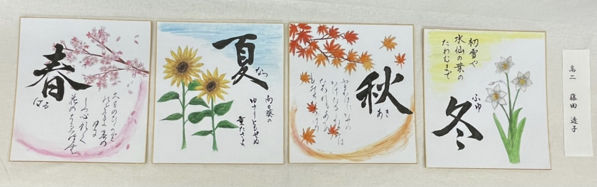
- 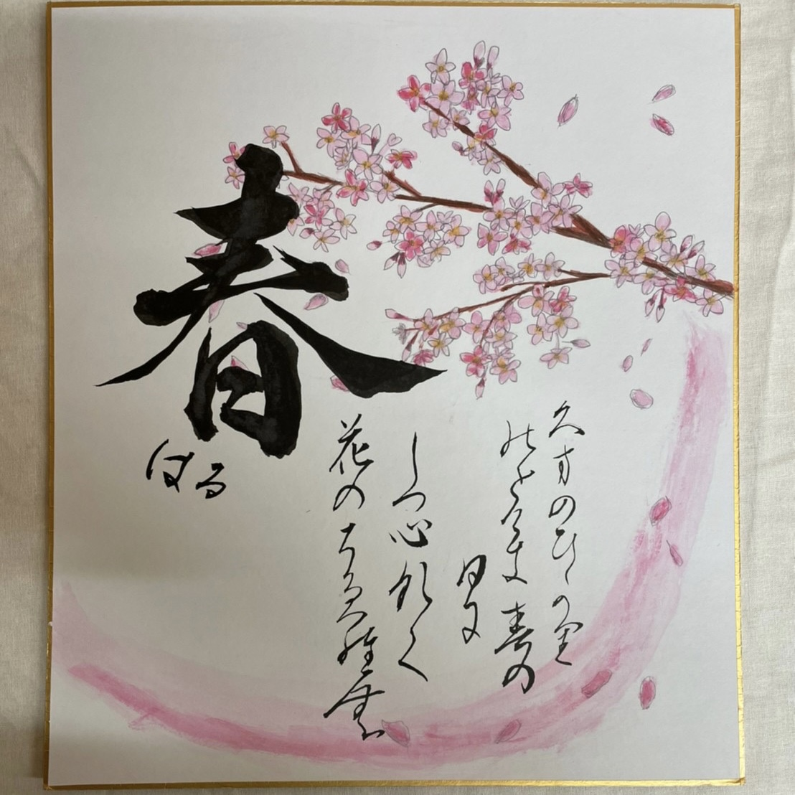


- 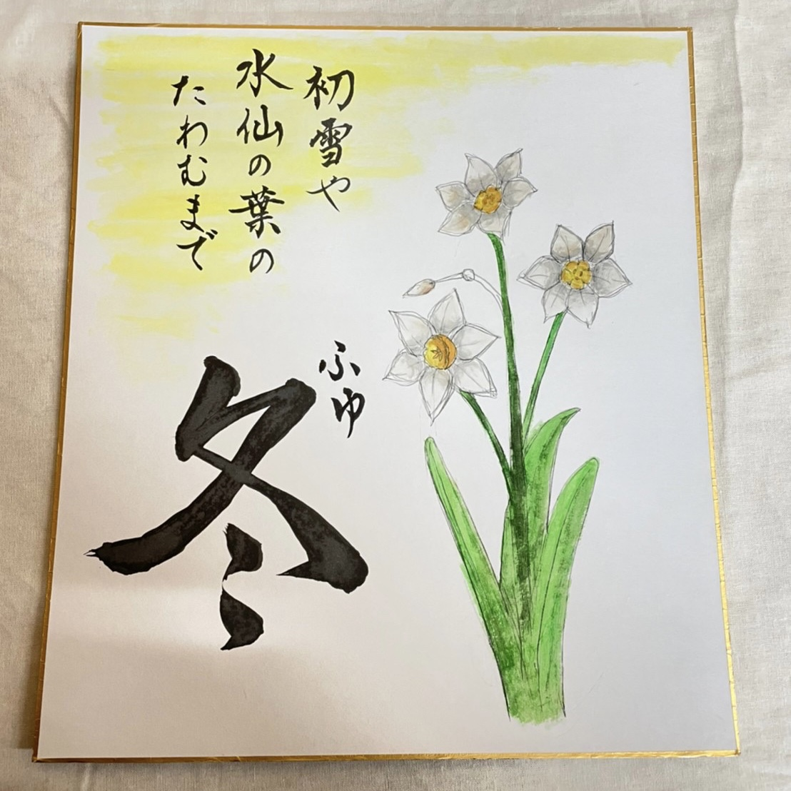
それぞれの季節の代表的な花を背景に描き、それにあった和歌や百人一首を選びました。
季節ごとに色味や書の字体を変えたところに着目していただきたいです。
高1の作品
入濱菫
臨書『真草千字文』

王羲之の7代目の子孫・智永が王羲之の書法を受け継いで書いたもの。
''千字文''とは漢字の学習のために作られた漢詩で、千文字の異なる漢字が使われている。
創作
この作品は、秋をテーマにした作品です。字に秋の色を取り入れたり、紅葉を添えることによって秋の場面を感じられるように制作しました。
酒井ちひろ
臨書『墓誌銘集』
臨書は墓誌銘集から選びました。楷書で、太く短くを意識して書きました。
創作
創作は春をテーマに桜と風景麗と書きました。春に咲く桜は風景を麗しくしてくれる存在だと思ったのでこの字にしました。桜も全て手書きで、色塗りもしました
田中結羽
臨書

創作

新型コロナウイルスに苦しまれている世の中今年の中秋の名月は満月だったので希望を表していると感じて作りました。
原田佳奈
臨書『孔子廟堂碑』

中国、唐の太宗が長安の国子監内に孔子廟を改築し、その完成を記念して建てられた碑で、皇帝の命により唐の四大家の一人、虞世南が撰書したものです。書体は、楷書体です。
創作


私が思う季節ごとの歌を書きました。
鏡に書いたのは、その季節の空はどんななのかなど、普段あまり目のいかないとこに気づく手助けになるといいなとおもったからです。
古見美有
創作
創作は「清明」という言葉にしました。
清らかで明るく、生き生きとした様子を意味する「清浄明潔」を略した言葉で、春に草木がいっせいに花を咲かせ活気あふれる時期を表すために刺繍で字と周りの花を縫って作りました。
松田莉奈
臨書『真草千字文』
千字文とは、子供に漢字を教えたり、書の手本として使うために用いられた漢文の長詩です、1000の異なった文字が使われていて、全て違った文字で、一字も重複していません。
創作


- 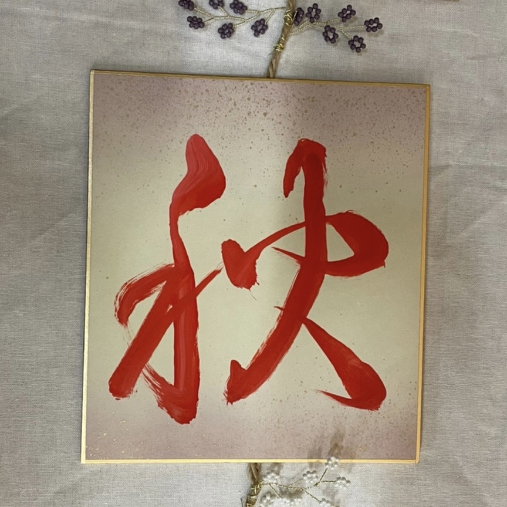

今回のテーマが春夏秋冬なので字はそのまま書きました。
文字の色と色紙の色をその季節にあった色に揃えて季節を感じられるようにしました。
三田早希子
臨書『九成宮醴泉銘』
臨書は欧陽詢書「九成宮醴泉銘」から引用しました。 この文章には、「真珠や璧玉が輝き照り映え、金色と碧玉のように光を放っているようだ。 夕陽は雲や霞を赤々と染め、太陽と月の光を蔽い隠さんばかりの状況である。」という意味があります
創作
「春濤」とは、春の波を表す季語です。海を意識したフォトフレームに書き、春の波は大きくても穏やかなことを表現しました。
栁澤怜花
臨書『真草千字文』

「真草」とは、真書（楷書）と草書の2つの書体のこと。「千字文」とは、子供に漢字を教えたり書の手本として用いられた漢文の長詩で、1000字の異なった文字が使われている。
創作


- 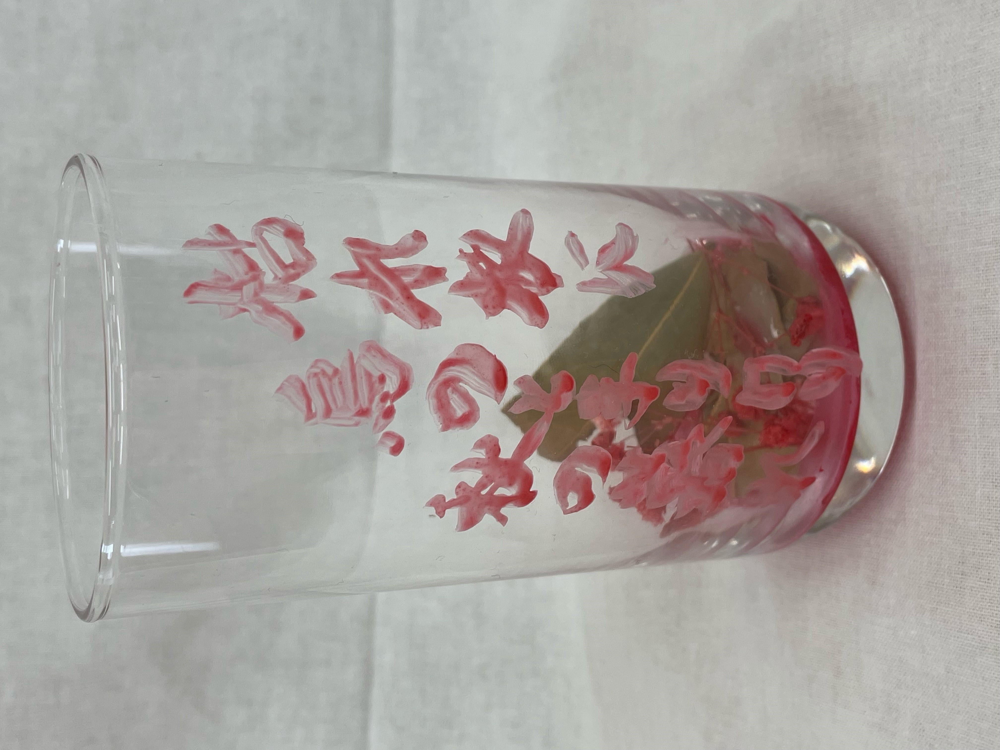

四つのコップに書いた俳句はどれもその季節を代表する俳句になっていて、色使いと造花でその季節を感じられるように工夫しました。
吉村彩希
臨書『一陽来復』
一陽来復には冬が終わり春が来ること、新年が来ること、悪いことが続いた後で幸運に向かうことなどの意味があります。 私たちは今コロナウイルスによって今まで通りの生活を送ることが出来ない。そのような中でも無事に新年を迎え幸せだと思える日々が続いて欲しいという願いを込めた作品です。
創作『終以文徳懐遠人』

これは九成宮醴泉銘 の1部です。
私は1行で力強い印象を与える作品にしたいと思い書いた作品です。
中3の作品
臨書『真草千字文』
真草千字文に書かれている文章は、4字ずつで1句をなす韻文が250句、全部で1000字になり、重複した文字は1字もありません。
千字文は、周興嗣が王羲之の草書から無秩序に引き出された千字を使って、韻文に使ったと伝えられています。
戸部瑠海香

三重野梨那
- 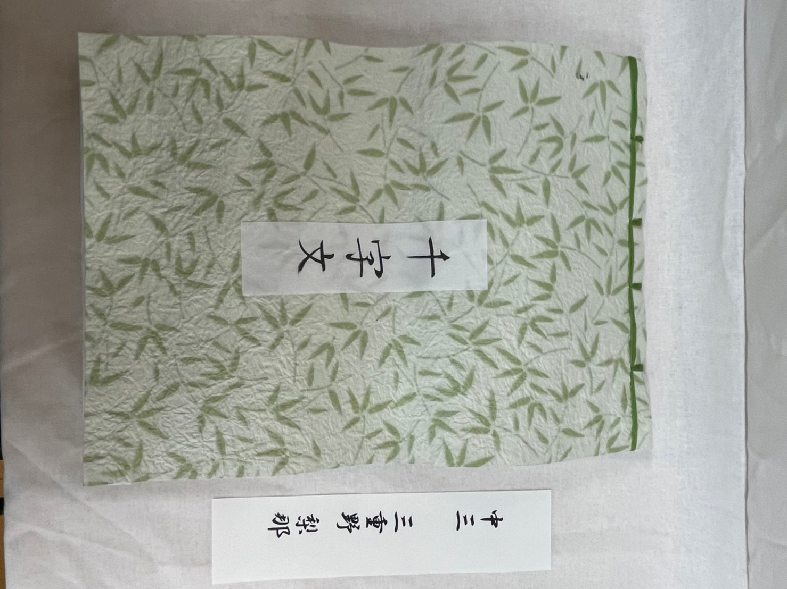
宮下満帆

横山礼華

創作
戸部瑠海香

私が選んだのは大伴家持が万葉集の中で詠んだ秋の季語が入った短歌です。この歌は一年に一度しかないこの儚い時間を待ち続けてなくてはいけないのをもどかしく思うという意味です。 一年に一度しかないなでしこ祭やその準備期間を少し思わせるような歌かなと思いました。この歌は七夕に詠まれているので、もちろん織姫と彦星を思い浮かべながら詠まれています。 しかし星や空を連想させるような語句はなく7月は旧暦の秋なので秋の季語が入っているので今年のテーマ「春夏秋冬」に合うと思いました。 今回は原文と訓読文を読み比べて原文の字の並びが美しいと感じたので原文で書きました。ひらがなが登場する以前の文章なので今の日本語ではあまり使わない漢字もあり万葉集らしい雰囲気を感じられると思います。
三重野梨那
意味: 冬が過ぎて春が来れば、年月は新しくなるけれど、人は古くなってゆきます。
虚しい様な詩なのかなと思っていたんですが、歳を重ねていくからこその美しさがあると言っているようで、とても印象に残ったので選びました。
宮下満帆
夏はセミや小さな子たちが夕方まで楽しく遊んでいるが秋になるとすぐに暗くなってしまい寂しい気持ちになるから。
中2の作品
臨書『九成宮醴泉銘』
九成宮醴泉銘は楷書で1行50字、24行に謹厳に揮毫します。 一点一画、寸分の隙もない緻密な造形性と、格調の高さとは、古くから｢楷法の極則｣と称して尊重され、楷書の理想形とされてきました。
髙木紗憂
西山波那
- 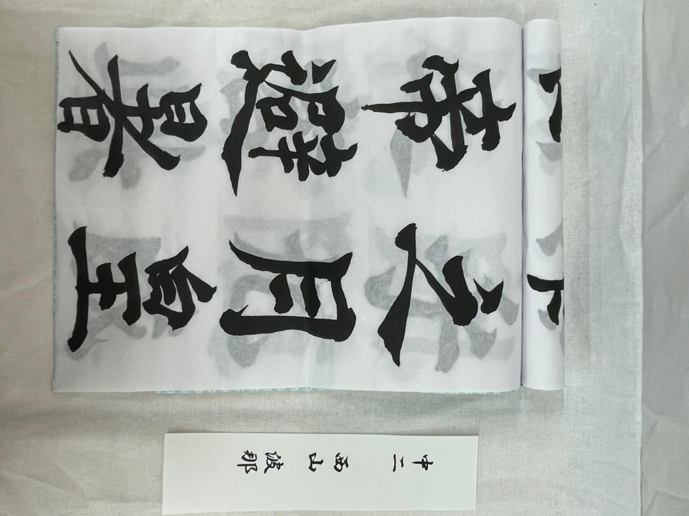
創作
髙木紗憂
「雪月風花」とは四季折々の美しい自然の景色のことです。今回のテーマが春夏秋冬だったのでこの四字熟語にしました。
西山波那
「新涼灯火」という四字熟語は、秋の始まりを表す熟語で、ちょうどなでしこ祭を行う季節なので、この四字熟語を選びました。
中1の作品
臨書『いろは帖』
いろはにほへと〜の順番でその仮名の成り立ちがよくわかるものになっています。中学1年生らしい元気な作品です。
創作『春夏秋冬』
今年度の展示テーマである「春夏秋冬」を、半紙に力いっぱい書きました。